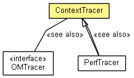

org.eclipse.net4j.util.om.trace
Class ContextTracer
java.lang.Object
 org.eclipse.net4j.util.om.trace.ContextTracer
org.eclipse.net4j.util.om.trace.ContextTracer
- Direct Known Subclasses:
- PerfTracer
- public class ContextTracer
- extends Object

| Methods inherited from class java.lang.Object |
clone, equals, finalize, getClass, hashCode, notify, notifyAll, toString, wait, wait, wait |
ContextTracer
public ContextTracer(OMTracer delegate,
Class<?> context)
getBundle
public OMBundle getBundle()
getFullName
public String getFullName()
getName
public String getName()
getDelegate
public OMTracer getDelegate()
getParent
public OMTracer getParent()
isEnabled
public boolean isEnabled()
setEnabled
public void setEnabled(boolean enabled)
format
public void format(String pattern,
Object... args)
format
public void format(String pattern,
Throwable t,
Object... args)
trace
public void trace(String msg,
Throwable t)
trace
public void trace(String msg)
trace
public void trace(Throwable t)
Copyright (c) 2004 - 2012 Eike Stepper (Berlin, Germany) and others.